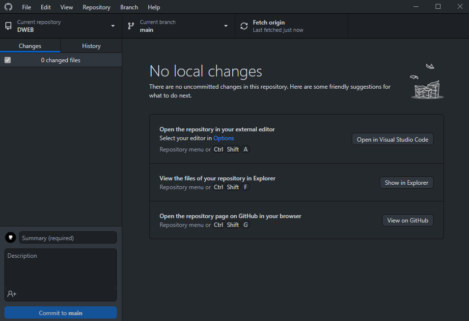
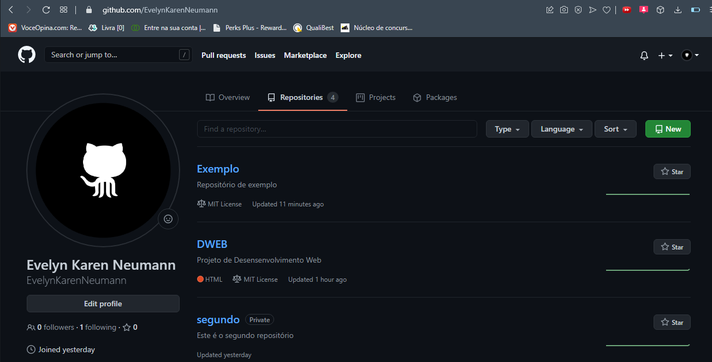
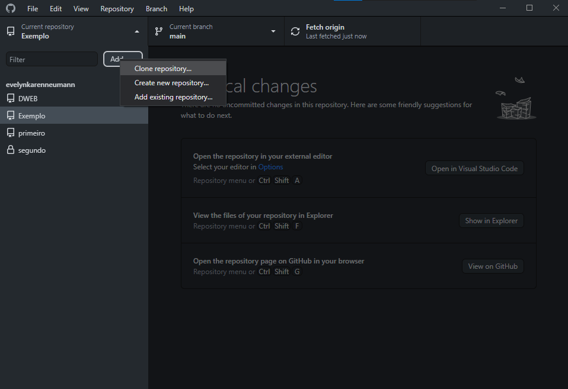
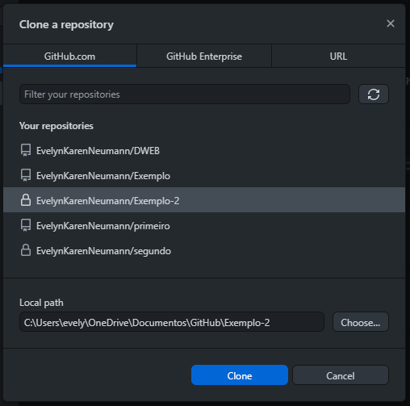

Sistema que realiza o controle de versões de um código ou documento.É possível gerenciar as versões de um código ou documento realizadas por um desenvolvedor ou equipe de desenvolvedores.
TIPOS:
CENTRALIZADO
DISTRIBUÍDO
GIT
É um software livre de versionamento que surgiu para o desenvolvimento do Kernel do Linux, foi projetado e desenvolvido por Linus Torvalds em 2005.Cada diretório de trabalho do Git é um repositório com um histórico completo e habilidade total de acompanhamento das revisões, não dependente de acesso a uma rede ou a um servidor central.
GITHUB
Plataforma de hospedagem de código-fonte e arquivos com controle de versão. Surgiu em 2008 e foi adquirido em 2018 pela Microdoft por US$7,5 bilhões. Hospeda cerca de 100 milhões de projetos e 56 milhões de usuários.

GITHUB DESKTOP
O GitHub Desktop é um aplicativo que permite que você interaja com o GitHub usando uma GUI em vez da linha de comando ou de um navegador web.O GitHub Desktop amplia e simplifica o fluxo de trabalho no GitHub.com com uma interface visual, em vez de comandos de texto na linha de comando.

VSCODE
O Visual Studio Code é um editor de código-fonte desenvolvido pela Microsoft para Windows, Linux e macOS. Ele inclui suporte para depuração, controle de versionamento Git incorporado, realce de sintaxe, complementação inteligente de código, snippets e refatoração de código.

Você pode instalar ou acessar eles nos links a seguir:
COMO CRIAR UM REPOSITÓRIO NO GITHUB
Primeiro abra o GitHub Desktop como na imagem
Depois selecione "file"
Selecione "Create a new repository"
Preencha todos os campos
Clique para publicar o repositório no seu perfil do GitHub
Preencha o nome do seu repositório, a descrição dele e desmarque a opção "Keep this code private" e publique-o
Após fazer isso acesse sua conta no site do GitHub e você poderá acessar seu repositório
Ele ficará assim:
COMO ABRIR O SEU REPOSITÓRIO NO VSCODE
Primeiro abra o GitHub Desktop como na imagem
Depois selecione "Open in Visual Studio Code"
Ele ficará assim, onde você irá programar
Após realizar uma alteração no código você precisará realizar um commit. No contexto de ciência da computação, gerenciamento de dados e controle de versão, commit refere-se ao processo de tornar permanente um conjunto de alterações, ou seja, de efetivar as alterações. Um uso comum é a conclusão de uma transação.

Após salvar o arquivo no Vscode abra novamente o GitHub Desktop, nomeie o seu commit e clique em "Commit to main"
Clique para publicar o seu commit no repositório do seu perfil no GitHub
E assim atualizará seu repositório
COMO CLONAR UM REPOSITÓRIO DE FORMA REMOTA
Primeiro abra sua conta no GitHub e acesse seus repositórios
Clique em "new" para criar um novo repositório
Preencha todos os dados e crie o repositório
Após fazer isso abra o GitHub Desktop
Selecione "clone repository"
Selecione o repositório que deseja clonar e clique em "clone" e está pronto

PROJETOS PRÉ-EXISTENTES
Primeiro abra o GitHub Desktop como na imagem
Depois selecione "file"
Selecione "Create a new repository"
Preencha todos os campos
Você vai entrar nos seus documentos e selecionar os arquivos que deseja
E colar eles na sua pasta do projeto
Fazer um commit
Publicar seu repositório
Ficará salvo na sua conta do GitHub
PARA MAIS PROJETOS DE EVELYN KAREN NEUMANN